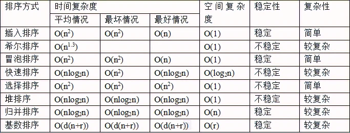
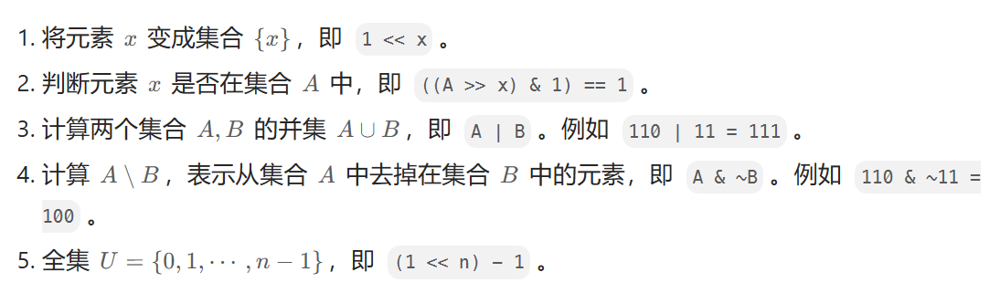
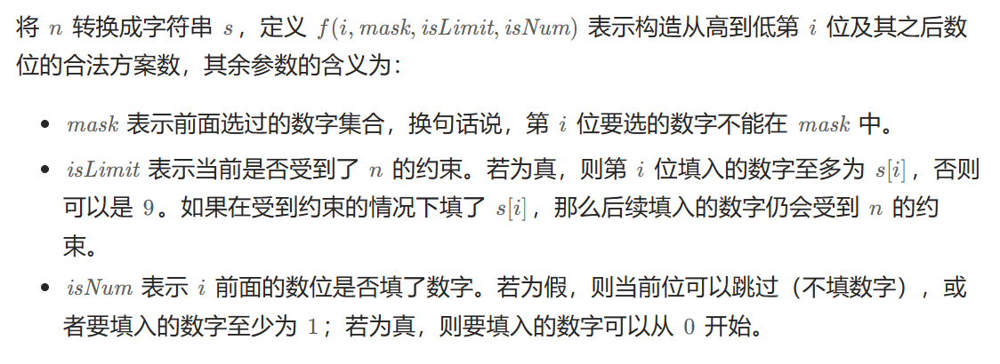
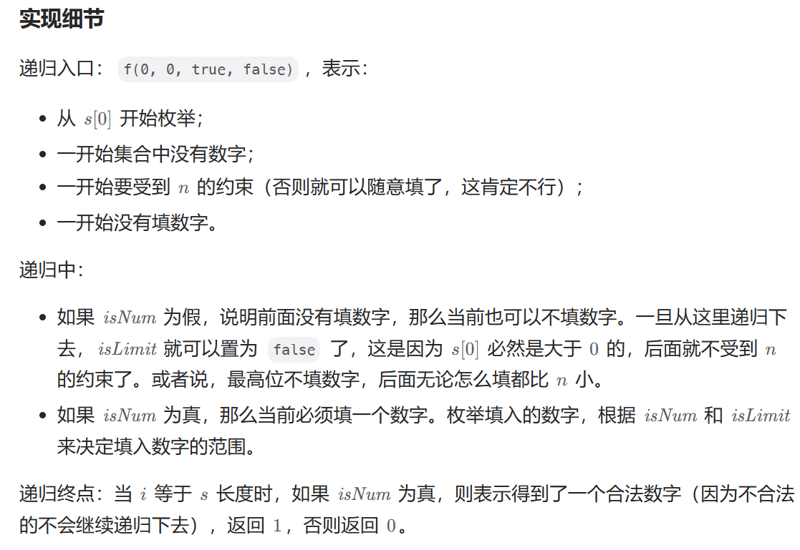
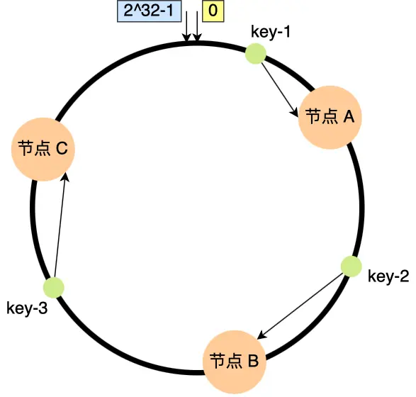

# 排序

# 快速排序
void qsort(vector<int>& nums, int left, int right) { | |
if (left < right) { | |
// 随机选取哨兵并放到数组末尾 | |
int index = rand() % (right - left + 1) + left; | |
swap(nums[right], nums[index]); | |
int i = left, j = right - 1, pivot = nums[right]; | |
// 在当前子数组中确保 i 左边的都比哨兵小，j 右边的都比哨兵大 | |
while (true) { | |
while (i <= j and nums[i] < pivot)i++; | |
while (i <= j and nums[j] > pivot)j--; | |
if (i > j)break; | |
swap(nums[i++], nums[j--]); | |
} | |
// 此时 i 的位置是从左往右第一个比哨兵大的位置，也就是哨兵应该存在的位置 | |
swap(nums[right], nums[i]); | |
// 递归逐渐排序左右 | |
qsort(nums, left, i - 1); | |
qsort(nums, i + 1, right); | |
} | |
return; | |
} |
# 桶排序
// 小根堆 | |
public class Heap { | |
ListNode[] nums; | |
int capacity; | |
int size = 0; | |
public Heap(int capacity) { | |
this.capacity = capacity; | |
nums = new ListNode[capacity]; | |
} | |
// 进行下浮 | |
public void heapify(int parent) { | |
while (true) { | |
int left = 2 * parent + 1; | |
int right = left + 1; | |
int minIndex = parent; | |
if (left < size && nums[left].val < nums[minIndex].val) { | |
minIndex = left; | |
} | |
if (right < size && nums[right].val < nums[minIndex].val) { | |
minIndex = right; | |
} | |
if (minIndex == parent) { | |
return; | |
} else { | |
swap(parent, minIndex); | |
parent = minIndex; | |
} | |
} | |
} | |
// 将堆顶弹出 | |
public ListNode get() { | |
swap(0, size - 1); | |
ListNode ans = nums[size - 1]; | |
size--;//size 表示此时的大小 | |
heapify(0); | |
return ans; | |
} | |
// 将元素放入堆尾，随后进行上浮 | |
public void put(ListNode node) { | |
if (node == null) { | |
return; | |
} | |
int child = size++; | |
int parent = (child - 1) / 2; | |
while (child != 0 && nums[parent].val > node.val) { | |
nums[child] = nums[parent]; | |
child = parent; | |
parent = (child - 1) / 2; | |
} | |
nums[child] = node; | |
} | |
public void swap(int i, int j) { | |
ListNode tmp = nums[i]; | |
nums[i] = nums[j]; | |
nums[j] = tmp; | |
} | |
} |
# 归并排序
// 自顶向下递归归并 | |
ListNode* sortList(ListNode* head, ListNode* tail) { | |
if (head == nullptr) { | |
return head; | |
} | |
if (head->next == tail) { | |
head->next = nullptr; | |
return head; | |
} | |
// 找到链表中点 | |
ListNode* slow = head, *fast = head; | |
while (fast != tail) { | |
slow = slow->next; | |
fast = fast->next; | |
if (fast != tail) { | |
fast = fast->next; | |
} | |
} | |
ListNode* mid = slow; | |
// 递归拆分链表 | |
return merge(sortList(head, mid), sortList(mid, tail)); | |
} | |
ListNode* merge(ListNode* head1, ListNode* head2) { | |
ListNode* dummyHead = new ListNode(0); | |
ListNode* temp = dummyHead, *temp1 = head1, *temp2 = head2; | |
while (temp1 != nullptr && temp2 != nullptr) { | |
// 根据大小决定位置 | |
if (temp1->val <= temp2->val) { | |
temp->next = temp1; | |
temp1 = temp1->next; | |
} else { | |
temp->next = temp2; | |
temp2 = temp2->next; | |
} | |
temp = temp->next; | |
} | |
// 当有一边链表为空时，直接接入到新链表尾部 | |
if (temp1 != nullptr) { | |
temp->next = temp1; | |
} else if (temp2 != nullptr) { | |
temp->next = temp2; | |
} | |
return dummyHead->next; | |
} |
# 位运算

# 字符串
# 旋转字符串（左旋转 n 位）
右旋转顺序为 312
- 反转区间为前 n 的子串
- 反转区间为 n 到末尾的子串
- 反转整个字符串
# KMP 算法
# 前缀表
前缀表是用来回退的，它记录了模式串与主串 (文本串) 不匹配的时候，模式串应该从哪里开始重新匹配
前缀表记录下标 i 之前（包括 i）的字符串中，有多大长度的相同前缀后缀
找到了最长相等的前缀和后缀，匹配失败的位置是后缀子串的后面，那么我们找到与其相同的前缀的后面重新匹配就可以了。所以前缀表具有告诉我们当前位置匹配失败，跳到之前已经匹配过的地方的能力
// 构建前缀表，即 next 数组 | |
private void getNext(int[] next, String s) { | |
//j 指向前缀末尾，i 指向后缀末尾 | |
int j = 0; | |
next[0] = 0; | |
for (int i = 1; i < s.length(); i++) { | |
// 找前一位的对应的回退位置了 | |
while (j > 0 && s.charAt(j) != s.charAt(i)) j = next[j - 1]; | |
if (s.charAt(j) == s.charAt(i)) j++; | |
next[i] = j; | |
} | |
} | |
// 在 haystack 字符串中查找 needle 字符串第一次出现的位置 | |
public int strStr(String haystack, String needle) { | |
if (needle.length() == 0) return 0; | |
int[] next = new int[needle.length()]; | |
getNext(next, needle); | |
int j = 0; | |
for (int i = 0; i < haystack.length(); i++) { | |
while (j > 0 && needle.charAt(j) != haystack.charAt(i)) | |
j = next[j - 1]; | |
if (needle.charAt(j) == haystack.charAt(i)) | |
j++; | |
if (j == needle.length()) | |
return i - needle.length() + 1; | |
} | |
return -1; | |
} |
# 二叉树
# 递归函数什么时候需要返回值
搜索整棵二叉树且不用处理递归返回值 不需要
搜索整棵二叉树且需要处理递归返回值 需要
搜索其中一条边 需要
# 二叉树的统一迭代法
根据遍历的顺序，修改代码的顺序即可
中序遍历的入栈顺序采用 右中空左 则出栈顺序为左中空右
后序遍历的入栈顺序采用 中空右左 则出栈顺序为左右中
// 前序遍历 | |
class Solution { | |
public List<Integer> preorderTraversal(TreeNode root) { | |
List<Integer> result = new LinkedList<>(); | |
Stack<TreeNode> st = new Stack<>(); | |
if (root != null) st.push(root); | |
while (!st.empty()) { | |
TreeNode node = st.peek(); | |
if (node != null) { | |
st.pop(); // 将该节点弹出，避免重复操作，下面再将右中左节点添加到栈中 | |
// 只需改变下面四行代码的顺序即可实现不同的遍历 | |
if (node.right!=null) st.push(node.right); // 添加右节点（空节点不入栈） | |
if (node.left!=null) st.push(node.left); // 添加左节点（空节点不入栈） | |
st.push(node); // 添加中节点 | |
st.push(null); // 中节点访问过，但是还没有处理，加入空节点做为标记。 | |
} else { // 只有遇到空节点的时候，才将下一个节点放进结果集 | |
st.pop(); // 将空节点弹出 | |
node = st.peek(); // 重新取出栈中元素 | |
st.pop(); | |
result.add(node.val); // 加入到结果集 | |
} | |
} | |
return result; | |
} | |
} |
# 二叉树的递归层序遍历
class Solution { | |
// 二级链表，每一个元素存储每一层元素所组成的链表 | |
public List<List<Integer>> resList = new ArrayList<List<Integer>>(); | |
public List<List<Integer>> levelOrder(TreeNode root) { | |
checkFun(root,0); | |
return resList; | |
} | |
// 递归方式 | |
public void checkFun(TreeNode node, Integer deep) { | |
if (node == null) return; | |
deep++; | |
// 防止创建多余的层级链表 | |
if (resList.size() < deep) { | |
// 当层级增加时，list 的 Item 的长度也增加，利用 list 的索引值进行层级界定 | |
List<Integer> item = new ArrayList<Integer>(); | |
resList.add(item); | |
} | |
// 将这一层的结点放入当前层的链表中 | |
resList.get(deep - 1).add(node.val); | |
// 进入下一层 | |
checkFun01(node.left, deep); | |
checkFun01(node.right, deep); | |
} | |
} |
# 遍历序列构造二叉树
# 中序与后序
以 后序数组的最后一个元素为切割点，先切中序数组，根据中序数组，反过来再切后序数组。一层一层切下去，每次后序数组最后一个元素就是节点元素。
# 前序与中序
以 前序数组的第一个元素为切割点，先切中序数组，根据中序数组，反过来再切后序数组。一层一层切下去，每次前序数组第一个元素就是节点元素。
# 回溯算法
组合问题：N 个数里面按一定规则找出 k 个数的集合
切割问题：一个字符串按一定规则有几种切割方式
子集问题：一个 N 个数的集合里有多少符合条件的子集
排列问题：N 个数按一定规则全排列，有几种排列方式
棋盘问题：N 皇后，解数独等等
void backtracking(参数) { | |
if (终止条件) { | |
存放结果; | |
return; | |
} | |
for (选择：本层集合中元素（树中节点孩子的数量就是集合的大小）) { | |
处理节点; | |
backtracking(路径，选择列表); // 递归 | |
回溯，撤销处理结果 | |
} |
for 循环横向遍历，递归纵向遍历，回溯不断调整结果集
横向遍历调整选取的位置 纵向遍历调整选取的数量 第 n 层则表示调整第 n 个选取的位置
去重：树枝去重 树层去重 (常用)
used 数组为 1 表示树枝用过，反之则是树层用过
# 组合总和 (有重复元素，且一个元素只能使用一次)
class Solution { | |
LinkedList<Integer> path = new LinkedList<>(); | |
List<List<Integer>> ans = new ArrayList<>(); | |
boolean[] used; | |
int sum = 0; | |
public List<List<Integer>> combinationSum2(int[] candidates, int target) { | |
used = new boolean[candidates.length]; | |
// 加标志数组，用来辅助判断同层节点是否已经遍历 | |
Arrays.fill(used, false); | |
// 为了将重复的数字都放到一起，所以先进行排序 | |
Arrays.sort(candidates); | |
backTracking(candidates, target, 0); | |
return ans; | |
} | |
private void backTracking(int[] candidates, int target, int startIndex) { | |
if (sum == target) { | |
ans.add(new ArrayList(path)); | |
return; | |
} | |
for (int i = startIndex; i < candidates.length; i++) { | |
if (sum + candidates[i] > target) { | |
break; | |
} | |
// 出现重复节点，同层的第一个节点已经被访问过，所以直接跳过 | |
if (i > 0 && candidates[i] == candidates[i - 1] && !used[i - 1]) { | |
continue; | |
} | |
used[i] = true; | |
sum += candidates[i]; | |
path.add(candidates[i]); | |
// 每个节点仅能选择一次，所以从下一位开始 | |
backTracking(candidates, target, i + 1); | |
used[i] = false; | |
sum -= candidates[i]; | |
path.removeLast(); | |
} | |
} | |
} |
# 全排列 (有重复元素)
class Solution { | |
// 存放结果 | |
List<List<Integer>> result = new ArrayList<>(); | |
// 暂存结果 | |
List<Integer> path = new ArrayList<>(); | |
public List<List<Integer>> permuteUnique(int[] nums) { | |
boolean[] used = new boolean[nums.length]; | |
Arrays.fill(used, false); | |
Arrays.sort(nums); | |
backTrack(nums, used); | |
return result; | |
} | |
private void backTrack(int[] nums, boolean[] used) { | |
if (path.size() == nums.length) { | |
result.add(new ArrayList<>(path)); | |
return; | |
} | |
for (int i = 0; i < nums.length; i++) { | |
//used [i - 1] == true，说明同⼀树⽀ nums [i - 1] 使⽤过 | |
//used [i - 1] == false，说明同⼀树层 nums [i - 1] 使⽤过 | |
// 如果同⼀树层 nums [i - 1] 使⽤过则直接跳过 | |
if (i > 0 && nums[i] == nums[i - 1] && used[i - 1] == false) { | |
continue; | |
} | |
// 如果同⼀树⽀ nums [i] 没使⽤过开始处理 | |
if (used[i] == false) { | |
used[i] = true;// 标记同⼀树⽀ nums [i] 使⽤过，防止同一树枝重复使用 | |
path.add(nums[i]); | |
backTrack(nums, used); | |
path.remove(path.size() - 1);// 回溯，说明同⼀树层 nums [i] 使⽤过，防止下一树层重复 | |
used[i] = false;// 回溯 | |
} | |
} | |
} | |
} |
# 分割字符串，看分割的子串是否在单词表
private Set<String> set; | |
private int[] memo; | |
public boolean wordBreak(String s, List<String> wordDict) { | |
// 记忆数组 | |
memo = new int[s.length()]; | |
set = new HashSet<>(wordDict); | |
return backtracking(s, 0); | |
} | |
public boolean backtracking(String s, int startIndex) { | |
if (startIndex == s.length()) { | |
return true; | |
} | |
// 避免再次从这个地方开始截取子串匹配，节约时间 | |
if (memo[startIndex] == -1) { | |
return false; | |
} | |
for (int i = startIndex; i < s.length(); i++) { | |
String sub = s.substring(startIndex, i + 1); | |
// 拆分出来的单词无法匹配，继续切割 | |
if (!set.contains(sub)) { | |
continue; | |
} | |
boolean res = backtracking(s, i + 1); | |
if (res) return true; | |
} | |
// 这里是关键，找遍了 startIndex~s.length () 也没能匹配单词表，标记从 startIndex 开始不能找到 | |
memo[startIndex] = -1; | |
return false; | |
} |
# 二维递归 解数独
class Solution { | |
public void solveSudoku(char[][] board) { | |
solveSudokuHelper(board); | |
} | |
private boolean solveSudokuHelper(char[][] board){ | |
//「一个 for 循环遍历棋盘的行，一个 for 循环遍历棋盘的列， | |
// 一行一列确定下来之后，递归遍历这个位置放 9 个数字的可能性！」 | |
for (int i = 0; i < 9; i++){ // 遍历行 | |
for (int j = 0; j < 9; j++){ // 遍历列 | |
if (board[i][j] != '.'){ // 跳过原始数字 | |
continue; | |
} | |
for (char k = '1'; k <= '9'; k++){ // (i, j) 这个位置放 k 是否合适 | |
if (isValidSudoku(i, j, k, board)){ | |
board[i][j] = k; | |
if (solveSudokuHelper(board)){ // 如果找到合适一组立刻返回 | |
return true; | |
} | |
board[i][j] = '.'; | |
} | |
} | |
// 9 个数都试完了，都不行，那么就返回 false | |
return false; | |
} | |
} | |
// 遍历完没有返回 false，说明找到了合适棋盘位置了 | |
return true; | |
} | |
/** | |
* 判断棋盘是否合法有如下三个维度: | |
* 同行是否重复 | |
* 同列是否重复 | |
* 9 宫格里是否重复 | |
*/ | |
private boolean isValidSudoku(int row, int col, char val, char[][] board){ | |
// 同行是否重复 | |
for (int i = 0; i < 9; i++){ | |
if (board[row][i] == val){ | |
return false; | |
} | |
} | |
// 同列是否重复 | |
for (int j = 0; j < 9; j++){ | |
if (board[j][col] == val){ | |
return false; | |
} | |
} | |
// 9 宫格里是否重复 | |
int startRow = (row / 3) * 3; | |
int startCol = (col / 3) * 3; | |
for (int i = startRow; i < startRow + 3; i++){ | |
for (int j = startCol; j < startCol + 3; j++){ | |
if (board[i][j] == val){ | |
return false; | |
} | |
} | |
} | |
return true; | |
} | |
} |
# 岛屿问题通解
void dfs(int[][] grid, int r, int c) { | |
// 判断 base case | |
if (!inArea(grid, r, c)) { | |
return; | |
} | |
// 如果这个格子不是岛屿，直接返回 | |
if (grid[r][c] != 1) { | |
return; | |
} | |
grid[r][c] = 2; // 将格子标记为「已遍历过」 | |
// 访问上、下、左、右四个相邻结点 | |
dfs(grid, r - 1, c); | |
dfs(grid, r + 1, c); | |
dfs(grid, r, c - 1); | |
dfs(grid, r, c + 1); | |
} | |
// 判断坐标 (r, c) 是否在网格中 | |
boolean inArea(int[][] grid, int r, int c) { | |
return 0 <= r && r < grid.length | |
&& 0 <= c && c < grid[0].length; | |
} |
# 动态规划
- 确定 dp 数组（dp table）以及下标的含义
- 确定递推公式
- dp 数组如何初始化
- 确定遍历顺序
- 举例推导 dp 数组
求装满背包有几种方法 dp [j] += dp [j - nums [i]]
求组合数就是外层 for 遍历物品，内层 for 遍历背包
求排列数就是外层 for 遍历背包，内层 for 遍历物品
求背包的最大价值 dp [j] = max (dp [j], dp [j - weight [i]] + value [i])
求装满背包所需的最少物品 dp [j] = min (dp [j - coins [i]] + 1, dp [j])
# 01 背包
# 二维数组
public static void main(String[] args) { | |
int[] weight = {1,3,4}; | |
int[] value = {15,20,30}; | |
int bagSize = 4; | |
testWeightBagProblem(weight,value,bagSize); | |
} | |
/** | |
* 动态规划获得结果 | |
* @param weight 物品的重量 | |
* @param value 物品的价值 | |
* @param bagSize 背包的容量 | |
*/ | |
public static void testWeightBagProblem(int[] weight, int[] value, int bagSize){ | |
// 创建 dp 数组 | |
int goods = weight.length; // 获取物品的数量 | |
int[][] dp = new int[goods][bagSize + 1]; | |
// 初始化 dp 数组 | |
// 创建数组后，其中默认的值就是 0 | |
for (int j = weight[0]; j <= bagSize; j++) { | |
dp[0][j] = value[0]; | |
} | |
// 先遍历物品，再遍历背包重量 | |
for (int i = 1; i < weight.length; i++) { | |
for (int j = 1; j <= bagSize; j++) { | |
if (j < weight[i]) { | |
// 当前背包的容量都没有当前物品 i 大的时候，是不放物品 i 的 | |
// 那么前 i-1 个物品能放下的最大价值就是当前情况的最大价值 | |
dp[i][j] = dp[i-1][j]; | |
} else { | |
/* | |
当前背包的容量可以放下物品 i | |
那么此时分两种情况： | |
1、不放物品 i（放不下） | |
由 dp [i - 1][j] 推出，即背包容量为 j，里面不放物品 i 的最大价值，此时 dp [i][j] 就是 dp [i - 1][j] | |
2、放物品 i | |
由 dp [i - 1][j - weight [i]] 推出，再加上当前物品的价值 | |
比较这两种情况下，哪种背包中物品的最大价值最大 | |
*/ | |
dp[i][j] = Math.max(dp[i-1][j] , dp[i-1][j-weight[i]] + value[i]); | |
} | |
} | |
} | |
} |
# 滚动数组
public static void main(String[] args) { | |
int[] weight = {1, 3, 4}; | |
int[] value = {15, 20, 30}; | |
int bagWight = 4; | |
testWeightBagProblem(weight, value, bagWight); | |
} | |
public static void testWeightBagProblem(int[] weight, int[] value, int bagWeight){ | |
int wLen = weight.length; | |
// 定义 dp 数组：dp [j] 表示背包容量为 j 时，能获得的最大价值 | |
int[] dp = new int[bagWeight + 1]; | |
// 如果先遍历背包容量，那么每个 dp [j] 就只会放入一个物品 | |
/* | |
顺序遍历 | |
在执行第 i 次循环时，背包容量按照 0..bagWight 的顺序遍历一遍，来检测第 i 件物品是否能放 | |
在执行第 i 次循环且背包容量为 v 时，此时的 f [v] 存储的是 f [i - 1][v]，但此时 f [v-weight [i]] 存储的是 f [i][v-weight [i]] | |
则第 i 次循环中，执行背包容量为 v 时，容量为 v - weight [i] 的背包已经计算过，已经不是二维数组中上一层的数组 | |
不符合状态转移方程，所以应倒序遍历 | |
*/ | |
for (int i = 0; i < wLen; i++){ | |
for (int j = bagWeight; j >= weight[i]; j--){ | |
dp[j] = Math.max(dp[j], dp[j - weight[i]] + value[i]); | |
} | |
} | |
} |
# 完全背包
将 01 背包中的倒序遍历修改为正序遍历即可
private static void testCompletePack(){ | |
int[] weight = {1, 3, 4}; | |
int[] value = {15, 20, 30}; | |
int bagWeight = 4; | |
int[] dp = new int[bagWeight + 1]; | |
for (int i = 0; i < weight.length; i++){ // 遍历物品 | |
for (int j = weight[i]; j <= bagWeight; j++){ // 遍历背包容量 | |
dp[j] = Math.max(dp[j], dp[j - weight[i]] + value[i]); | |
} | |
} | |
} |
# 多重背包
将 01 背包的物品数量展开或者再加一个 for 循环遍历数量
public void MultiPack(){ | |
// 版本一：改变物品数量为 01 背包格式 | |
List<Integer> weight = new ArrayList<>(Arrays.asList(1, 3, 4)); | |
List<Integer> value = new ArrayList<>(Arrays.asList(15, 20, 30)); | |
List<Integer> nums = new ArrayList<>(Arrays.asList(2, 3, 2)); | |
int bagWeight = 10; | |
// 把物品展开为 i | |
for (int i = 0; i < nums.size(); i++) { | |
while (nums.get(i) > 1) { // | |
weight.add(weight.get(i)); | |
value.add(value.get(i)); | |
nums.set(i, nums.get(i) - 1); | |
} | |
} | |
int[] dp = new int[bagWeight + 1]; | |
for(int i = 0; i < weight.size(); i++) { // 遍历物品 | |
for(int j = bagWeight; j >= weight.get(i); j--) { // 遍历背包容量 | |
dp[j] = Math.max(dp[j], dp[j - weight.get(i)] + value.get(i)); | |
} | |
} | |
// 版本二：改变遍历个数 | |
int[] weight = new int[] {1, 3, 4}; | |
int[] value = new int[] {15, 20, 30}; | |
int[] nums = new int[] {2, 3, 2}; | |
int bagWeight = 10; | |
int[] dp = new int[bagWeight + 1]; | |
for(int i = 0; i < weight.length; i++) { // 遍历物品 | |
for(int j = bagWeight; j >= weight[i]; j--) { // 遍历背包容量 | |
// 以上为 01 背包，然后加一个遍历个数 | |
for (int k = 1; k <= nums[i] && (j - k * weight[i]) >= 0; k++) { // 遍历个数 | |
dp[j] = Math.max(dp[j], dp[j - k * weight[i]] + k * value[i]); | |
} | |
} | |
} | |
} |
# 股票问题
# 最多进行 k 次交易
class Solution { | |
public int maxProfit(int k, int[] prices) { | |
if (prices.length == 0) return 0; | |
// [天数][股票状态] | |
// 股票状态：奇数表示第 k 次交易持有 / 买入，偶数表示第 k 次交易不持有 / 卖出，0 表示没有操作 | |
int len = prices.length; | |
int[][] dp = new int[len][k*2 + 1]; | |
//dp 数组的初始化，与版本一同理 | |
for (int i = 1; i < k*2; i += 2) { | |
dp[0][i] = -prices[0]; | |
} | |
for (int i = 1; i < len; i++) { | |
for (int j = 0; j < k*2 - 1; j += 2) { | |
dp[i][j + 1] = Math.max(dp[i - 1][j + 1], dp[i - 1][j] - prices[i]); | |
dp[i][j + 2] = Math.max(dp[i - 1][j + 2], dp[i - 1][j + 1] + prices[i]); | |
} | |
} | |
return dp[len - 1][k*2]; | |
} | |
} |
# 买卖含有冷冻期
class Solution { | |
public int maxProfit(int[] prices) { | |
if (prices.length == 0) { | |
return 0; | |
} | |
int n = prices.length; | |
//dp [i][0]: 手上持有股票的最大收益 | |
//dp [i][1]: 手上不持有股票，并且处于冷冻期中的累计最大收益 | |
//dp [i][2]: 手上不持有股票，并且不在冷冻期中的累计最大收益 | |
int[][] dp = new int[n][3]; | |
dp[0][0] = -prices[0]; | |
for (int i = 1; i < n; ++i) { | |
dp[i][0] = Math.max(dp[i - 1][0], dp[i - 1][2] - prices[i]); | |
dp[i][1] = dp[i - 1][0] + prices[i]; | |
dp[i][2] = Math.max(dp[i - 1][1], dp[i - 1][2]); | |
} | |
return Math.max(dp[n - 1][1], dp[n - 1][2]); | |
} | |
} |
# 数位 DP
# 给定正整数 n，返回在 [1, n] 范围内具有 至少 1 位 重复数字的正整数的个数


class Solution { | |
char s[]; | |
int dp[][]; | |
public int numDupDigitsAtMostN(int n) { | |
s = Integer.toString(n).toCharArray(); | |
int m = s.length; | |
dp = new int[m][1 << 10]; | |
for (int i = 0; i < m; i++) | |
Arrays.fill(dp[i], -1); //-1 表示没有计算过 | |
return n - f(0, 0, true, false); | |
} | |
// 计算没有出现重复数字的数目 | |
// 当前需要填入第 i 位，前面填入的数字与 n 对应位置的数字不相同，需要求得的不重复数字的正整数数量只与 mask 相关，用 dp 数组记录 | |
int f(int i, int mask, boolean isLimit, boolean isNum) { | |
if (i == s.length) | |
return isNum ? 1 : 0; //isNum 为 true 表示得到了一个合法数字 | |
// 该组合已经出现过 | |
if (!isLimit && isNum && dp[i][mask] != -1) | |
return dp[i][mask]; | |
int res = 0; | |
if (!isNum) // 可以跳过当前数位，计算下一数位 | |
res = f(i + 1, mask, false, false); | |
// 如果前面填的数字都和 n 的一样，那么这一位至多填数字 s [i]（否则就超过 n 啦) | |
int up = isLimit ? s[i] - '0' : 9; | |
for (int d = isNum ? 0 : 1; d <= up; ++d) // 枚举要填入的数字 d | |
if ((mask >> d & 1) == 0) //d 不在 mask 中 | |
// 将该数位放入集合中，并计算下一个数位 | |
res += f(i + 1, mask | (1 << d), isLimit && d == up, true); | |
if (!isLimit && isNum) | |
dp[i][mask] = res; | |
return res; | |
} | |
} |
# 一致性哈希 (分布式系统)
一致哈希算法是对 2^32 进行取模运算，是一个固定的值，将「存储节点」和「数据」都映射到一个首尾相连的哈希环上。
映射的结果值往顺时针的方向的找到第一个节点，就是存储该数据的节点
在一致哈希算法中，如果增加或者移除一个节点，仅影响该节点在哈希环上顺时针相邻的后继节点，其它数据也不会受到影响。
一致性哈希算法虽然减少了数据迁移量，但是存在节点分布不均匀的问题
# 采用虚拟节点

当节点变化时，会有不同的节点共同分担系统的变化，因此稳定性更高